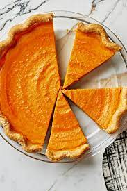

Sweet Potato Pie

Description
Sweet potato pie is a fairly easy and delicious dessert to make. The key to making it properly is to stop mixing every so often to remove the "strings" from the sweet potatoes. Do this multiple times until only a few strands are stuck to the mixer. This helps keep the pie smooth in texture. Also the pie filling should be sweet like ice cream prior to baking for the best taste.
Ingredients
- 1 pound of sweet potatoes
- 1/2 cup of butter
- 1 cup of white sugar
- 1/2 cup of milk
- 2 eggs
- 1/2 teaspoon ground nutmeg
- 1/2 teaspoon ground cinnamon
- 1 teaspoon vanilla extract
- 1 pie crust (9 inch)
Steps
- Place whole sweet potato in pot and cover with water; bring to a boil. Boil until tender when pierced with a fork, 40 to 50 minutes.
- Preheat oven to 350 degrees F (175 degrees C)
- Remove sweet potato from the pot and run under cold water. Remove and discard skin.
- Break sweet potato flesh apart and place in a bowl. Add butter and mix with an electric mixer until well combined.
- Add sugar, milk, eggs, nutmeg, cinnamon, and vanilla; beat on medium speed until mixture is smooth.
- Pour filling into unbaked pie crust.
- Bake in the preheated oven until a knife inserted in the center comes out clean, 55 to 60 minutes.
- Remove from oven and let cool before serving.